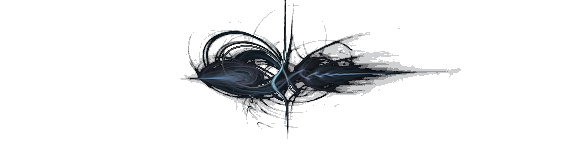

Hodgson's work assumes humans have an immortal, immaterial component which is constantly reincarnated in successive bodies, and is potentially the prey of larger and more powerful entities. I will argue that Hodgson has carefully worked this out within a consistent and rational science-fictional framework which merely borrows the background colouration of religious or occult superstition: and that in making this confusion, Hodgson was attempting a poetic reconciliation of scientific and religious views of the human condition.
The Night Land is full of monsters. But these monsters are not simply meaningless bogeymen, nor are they the devils associated with this or that traditional religion.
Hodgson formulated a "scientific" construction of psychic monstrosity, which is perhaps best expressed in this lengthy excerpt from "The Hog", one of the Carnacki stories (written some ten years after The Night Land):
'And so it seems to me we have the conception of a huge psychic world, bred out of the physical, lying far outside of this world and completely encompassing it, except for the doorways about which I hope to tell you some other evening. This enormous psychic world of the Outer Circle "breeds" — if I may use the term, its own psychic forces and intelligences, monstrous and otherwise, just as this world produces its own physical forces and intelligences — beings, animals, insects, etc., monstrous and otherwise...
(For the time being I am simply going to assert that the Carnacki stories and other works by Hodgson such as "Eloi, Eloi", employ the same Ab-Natural psychic biology as The Night Land. Later I may be able to demonstrate it more clearly.)
Let us rephrase the first paragraph of the quotation above:
'And so it seems to me we have the conception of a huge energy-being world, bred out of the physical, lying far outside of this world and completely encompassing it, except for the doorways about which I hope to tell you some other evening. This enormous energy-being world of the Outer Circle "breeds" — if I may use the term, its own energy-being forces and intelligences, monstrous and otherwise, just as this world produces its own physical forces and intelligences — beings, animals, insects, etc., monstrous and otherwise.
Suddenly, this sounds a lot more science-fictional, doesn't it?
But in fact nothing whatever has changed. I have merely substituted a set of noises commonly recognised as flagging "Science Fiction" — "energy being", "plasma entity" — for an equally meaningless set of noises commonly recognised as flagging "Horror" — "psychic", "spirit", "ka".
Reflect upon C.S Lewis's words in Perelandra:
We tend to think about non-human intelligences in two distinct categories, which we label "scientific" and "supernatural" respectively. We think, in one mood, of Mr Wells' Martians ... or his Selenites. In quite a different mood we let our minds loose on the possibility of angels, ghosts, fairies and the like. But the very moment we are compelled to recognise a creature in either class as real the distinction begins to get blurred ...
Lewis effectively asked: What if angels were real? Really real? Then they would be a sort of powerful living being, one not composed of ordinary matter, but in theory explicable by science. No longer supernatural, but real. Light is blood to them. By presenting his eldils to the reader as aliens, and only then moving upwards, as it were, into the supernatural realm, Lewis forced his readers to bypass the internal censors which instinctively divide the world into the supernatural and the scientific and surlabel the supernatural "unreal".
Hodgson attempted something similar, but not from a Christian viewpoint. His logic went something like this. Religion is bunk: but what if the human "spirit" is real, nonetheless? Really real? And really eternal? Then it must have some sort of physics. It must subsist on some sort of energy. It must have an identifiable location. It must have senses. And — finally — it may have predators.
An Ecology of the Ether
For another dose of Hodgson on the psychically monstrous let's return to Carnacki.
(By the way, I apologise for the number and length of these quoted sections: but it happens that they are the most apposite way of getting Hodgson's ideas across).
'But this is not the only circle of gas which is floating round us. There are, as I have been forced to conclude, larger and more attenuated "gas" belts lying, zone on zone, far up and around us. These compose what I have called the inner circles. They are surrounded in turn by a circle or belt of what I have called, for want of a better word, "emanations".
'This circle which I have named the Outer Circle cannot lie less than a hundred thousand miles off the earth, and has a thickness which I have presumed to be anything between five and ten million miles. I believe, but I cannot prove, that it does not spin with the earth but in the opposite direction, for which a plausible cause might be found in the study of the theory upon which a certain electrical machine is constructed.
'I have reason to believe that the spinning of this, the Outer Circle, is disturbed from time to time through causes which are quite unknown to me, but which I believe are based in physical phenomena. Now, the Outer Circle is the psychic circle, yet it is also physical. To illustrate what I mean I must again instance electricity, and say that just as electricity discovered itself to us as something quite different from any of our previous conceptions of matter, so is the Psychic or Outer Circle different from any of our previous conceptions of matter. Yet it is none the less physical in its origin, and in the sense that electricity is physical, the Outer or Psychic Circle is physical in its constituents. Speaking pictorially it is, physically, to the Inner Circle what the Inner Circle is to the upper strata of the air, and what the air — as we know that intimate gas — is to the waters and the waters to the solid world. You get my line of suggestion?'
Can you say "Van Allen Belts"?
In this passage the Hog and its kindred Sharks of the Ether take on the characteristics of "plasma beings", encoded in matter which is too thin and tenuous to be considered mundanely physical, but which is nonetheless not supernatural. Hodgson's coinage for this mode of being was was "Abnatural".
The monsters in The Night Land are essentially descendants of the Hog. Alive, the products of an evolutionary process, but not made of ordinary matter, they presumably sustain themselves within an ecology of lesser Abnatural entities.
Think of them as predatory fish in an ocean. The ones that bother us are in this analogy facultative bottom-feeders.
From the human point of view, they are soul-eaters. Call them pneumavores.
Hodgson speculates brilliantly on the source and origin of these entities. Some of them may be native to the Earth. Others have entered from other universes, through Doorways in the Night, "ruptures in the Aether", gaps in space which might correspond to the SF concept of Wormholes or Einstein-Rosen bridges. But they are not Gods or demons. They are the product of nature.
However, what is essential about these beings from a human point of view is not their origin, but their intent. As Hodgson memorably states, they are "congregated and gathered about the Mighty Pyramid, being attracted thereto by the great spiritual essence of so wondrous a multitude of humans gotten so close in one spot, even as sharks do come after the ship that hath bullocks within."
Sharks of the Ether indeed!
It is now time to examine Hodgson's ideas about the favored Prey of these monsters — the human spirit.
The Human Spirit as a Psychic Symbiote of the Body
Let us continue our excerpt from "The Hog":
'The monstrosities of the Outer Circle are malignant towards all that we consider most desirable, just in the same way a shark or a tiger may be considered malignant, in a physical way, to all that we consider desirable. They are predatory — as all positive force is predatory. They have desires regarding us which are incredibly more dreadful to our minds when comprehended than an intelligent sheep would consider our desires towards its own carcass. They plunder and destroy to satisfy lusts and hungers exactly as other forms of existence plunder and destroy to satisfy their lusts and hungers. And the desire of these monsters is chiefly, if not always, for the psychic entity of the human.
This formulation is clear, simple, and logical. In a nutshell, it is that human beings have a "non-physical" component which:
- is composed of the same type of immaterial "life" as the Hog and other pneumavores;
- is the seat of human consciousness;
- is potentially the prey of the pneumavores, which are far larger and more powerful.
The picture we get is of a human being as a sort of symbiote, with a material, animal, body and a localised, semi-immaterial, co-inhabiting "energy creature", which is identified with the traditional Spirit or Soul.
This identification is not religious. Hodgson was of course working in a fantastical/fictional mode. However, he attempted to work out his naturalistic idea of the "spirit" consistently and logically, while at the same time employing the vocabulary of spiritualism and religion to signal the fact that he was attempting a synthesis — a world-view which would be scientifically consistent with a God-less and radically entropic universe, but would allow humanity purpose and meaning.
The Abilities of the Spirit-Symbiote
It is now time to ennumerate Hodgson's ideas about the Spirit's capacities.
First, the psychic symbiote has senses, and is capable of surveying its environment in ways apart from the information obtained by the physical body.
Our hero is afflicted with the Night Hearing, which allows him to contact the humans in the Lesser redoubt and to some degree to listen in on the messages passing between the monsters in The Night Land. However, he is not unique except in degree. All human beings of this age have some "spiritual" senses — they can see the pneumavores with varying degrees of clarity, and all if them can sense the monsters' oppressive presence.
Second, the Spirit can send and receive messages. All human beings who "be not clods" can send and receive the telepathic identification code that Hodgson calls "The Master Word".
Also, some degree of controlled communication is possible. Not only does X have conversation with Naani, but massed messages, at least, can be sent by others with lesser talents — a group of would-be rescuers sends a long-distance message by calling "in unison".
Third, the Spirit is apparently the true seat of consciousness and volition. It is the human Spirit, solely, which utters the Master-Word (whether directly or through the lips). A human being without a Spirit is a sort of monster.
Finally, the Spirit is potentially immortal. It persists after death. It fleets away at death and becomes immune to the pneumavores. And in X and in Naani we learn that the Spirit is (at least in some cases) repeatedly reincarnated, and can carry information down the ages.
The Real Unreal and the Natural Supernatural
Hodgson does not speak more clearly of the nature and life cycle of the Spirit, because. I think, he is trying to perform a delicate balancing act. He is attempting to authenticate the spirit by integrating it with future sciences, while at the same time to keep a distance between the Spirit and everyday technology and life.
To express this authentication, Hodgson systematically breaks down the barriers between the "spiritual" and the scientific.
At no time is any such distinction acknowledged by anyone within the Redoubt.
The messages passing across the Night Land are the messages of entities which have the numinous essence of evil gods, or demons. But, they are also telepathic. And, they can also be detected mechanically, by machines. No distinction between these modes of being is ever made.
Similarly, the castellans of the Redoubt seem to be capable of fending off the pneumavores by purely mechanical/electrical means (though exactly how the force field that surrounds the Redoubt does this is not specified: Hodgson speaks only of a "vibration": perhaps it is a forgotten or rote technology.)
The armourers of the Redoubt cannot boast as much: there are no portable shields, no Spectrum Defences, and all the Redoubt's explorers are offered is a suicide capsule. But this in itself tells us that the people of the Redoubt know that death is an escape from the pneumavores, and therefore that there is something surviving after death to escape.
The Redoubt has no supernaturalist religion. It is not needed.
It would be unfair to ask Hodgson to offer us more than this. Any attempt to explain the Spirit beyond the hints he has given would destroy its mana. At the same time, any attempt to invoke a conventional religion would puncture the mystery of the Night Land like a balloon.
The point of Hodgson's formulation of the Spirit is that it is both natural and supernatural, physical and nonphysical, and it is real. As such, for this reader at least, it works perfectly.